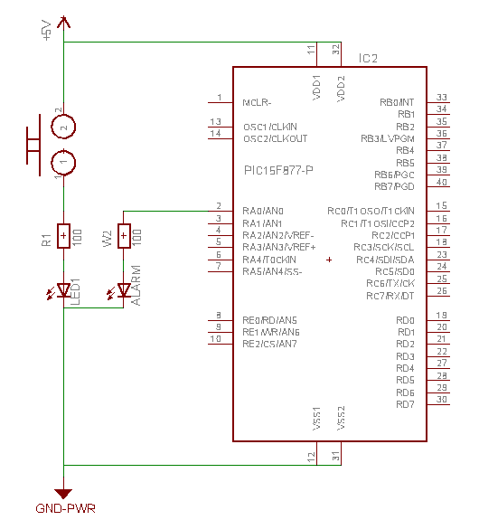
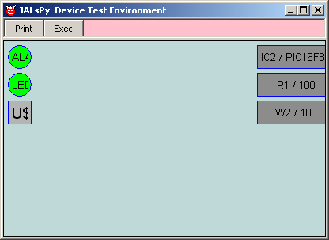
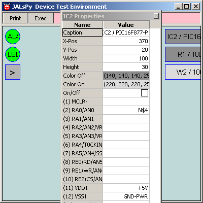

july 2007
JALsPy Hardware
Introduction
You can either create the hardware description directly into JALsPy, but it's far more convenient to import the hardware description from a real schematic design package like Eagle (free for small projects and relatively easy to learn).
The basics of the hardware description consists of:
Eagle Schematic
Let's start by creating a simple schematic in Eagle.

After creating the schematic in Eagle, 2 files should be exported from Eagle
We don't need the netlist, because PartList and PinList together give more and better information.
(Note: it would be very handy if someone could make an ULP, the export can be done with just 1 command, guaranteeing the right filenames)
Eagle Import
Now if we start the program for the first time, it will try to import a schematic from the part and pinlist (if available), and in our graphical view of the hardware we might see the following:

On the left we see the "known" devices, i.e. the devices that are recognized by JALsPy. We can distinguish both the LEDs, "LED1" and "ALARM", we see the switch "U$1". On the right the "unknown" devices are shown, the PIC "IC2" and the resistors "R1" and "W2".
Although the unknown devices don't have any functionality yet, their information is completely imported. Let's ask the properties of IC2 (the PIC), we see that RA0 is connected to netlist "N$4", which is exactly like in Eagle.

and because we've all the pin definitions now, this is a good start to create the device.